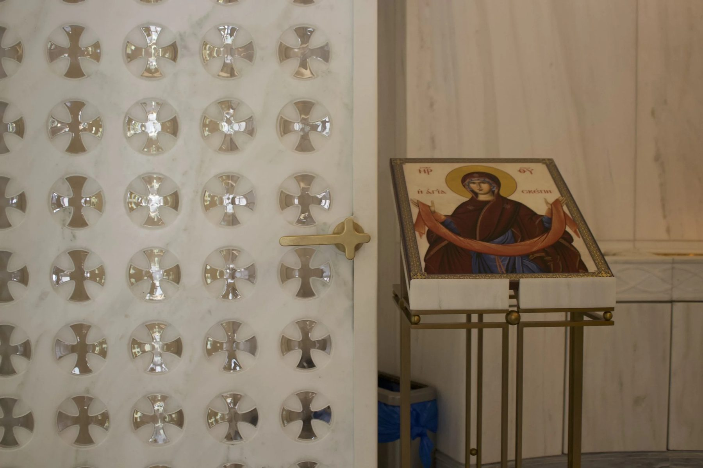
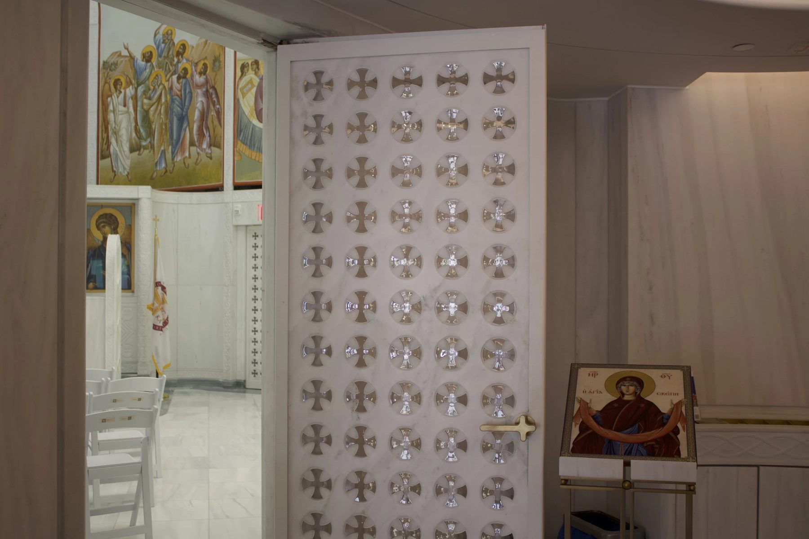
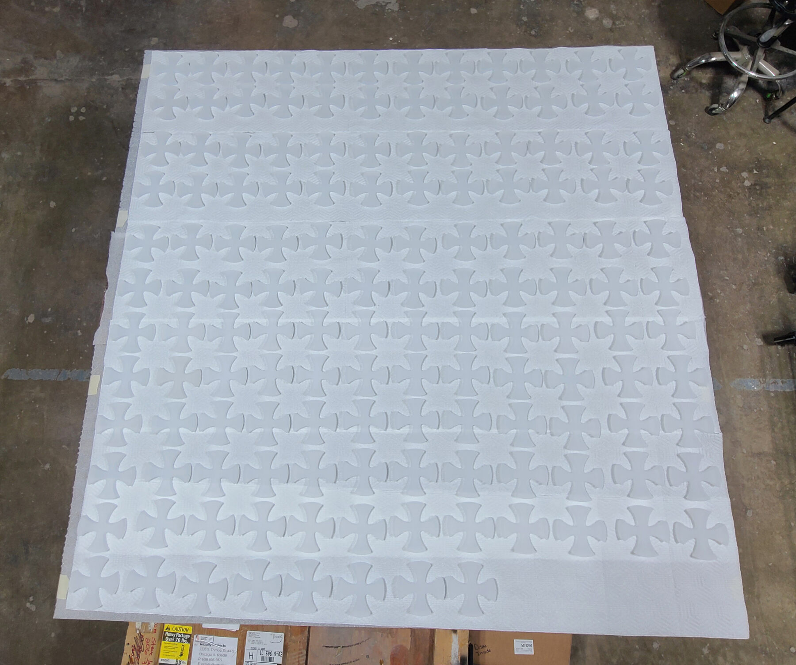
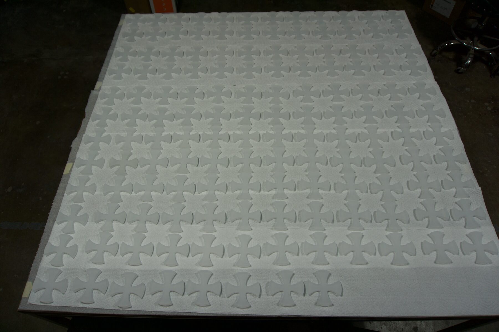
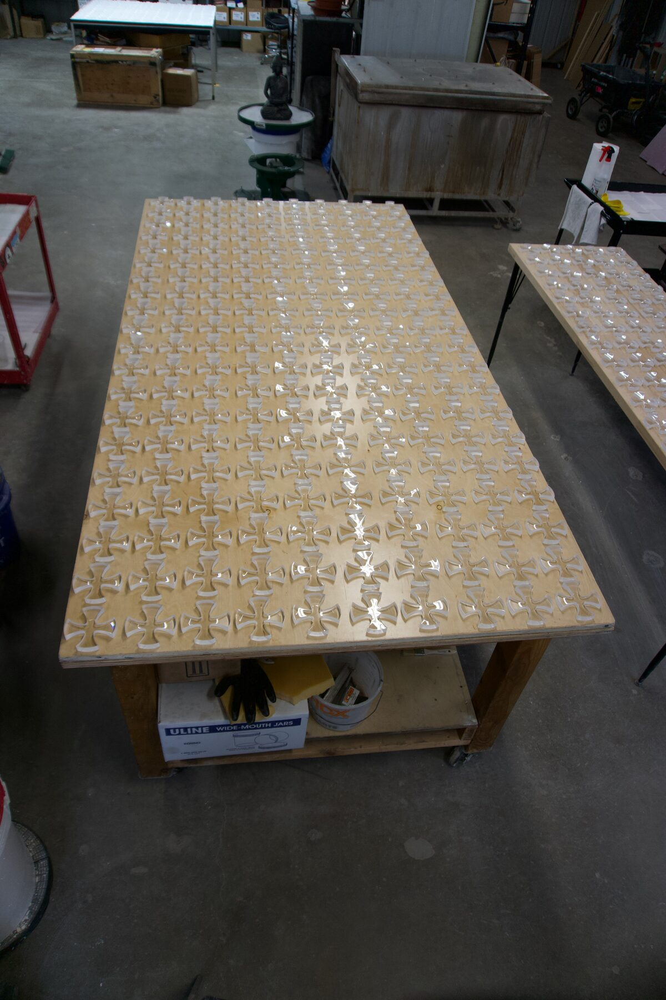
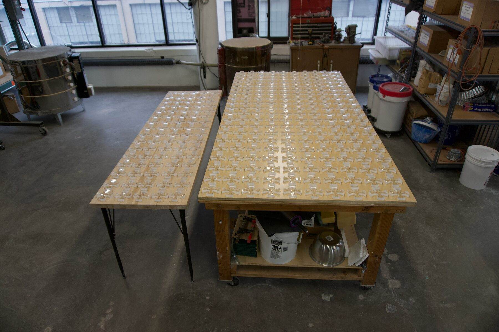

Glass / 2022
Glass Crosses
St. Nicholas Greek Orthodox Church, National Shrine
Four hundred and twenty hand cast and polished glass crosses set into Pentelic marble doors at the 9/11 Memorial.
St. Nicholas Greek Orthodox Church sits within the National Shrine at Ground Zero. Taking part in the adornment of a monument with that weight went beyond Chicago or New York and into the national record.
The crosses are cast from a high quality, optically clear leaded glass chosen to capture and refract light. Each one was cast, cold worked, and polished by hand, then set into CNC machined openings in the Pentelic marble doors.
The work demanded technical precision and an understanding of what the crosses would mean once installed.
Details
- Year
2022 - Location
New York, NY - Category
Glass - Materials
Optically clear leaded glass, Pentelic marble
Credits
- Architect: Santiago Calatrava
- Glass: Ally Reza
Index







